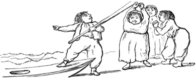
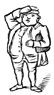

Neu fluitem dubiæ spe pendulus horæ . --
Hor .
Nor let me float in fortune 's power ,
Dependent on the future hour . --
Francis .
` Sir , -- As I have passed much of life in disgust and suspense , and lost many opportunities of advantage by a passion which I have reason to believe prevalent in different degrees over a great part of mankind , I can not but think myself well qualified to warn those who are yet uncaptivated of the dangers which they incur by placing themselves within its influence .
` In the course of even prosperity I was one day persuaded to buy a ticket in the lottery .
At last the day came , my ticket appeared , and rewarded all my care and sagacity with a despicable prize of fifty pounds .
` My friends , who honestly rejoiced upon my success , were very coldly received ; I hid myself a fortnight in the country that my chagrin might fume away without observation , and then , returning to my shop , began to listen after another lottery .
` With the news of a lottery I was soon gratified , and , having now found the vanity of conjecture and inefficacy of computation , I resolved to take the prize by violence , and therefore bought forty tickets , not omitting , however , to divide them between the even and the odd , that I might not miss the lucky class .
Many conclusions did I form , and many experiments did I try , to determine from which of those tickets I might most reasonably expect riches .
At last , being unable to satisfy myself by any modes of reasoning , I wrote the numbers upon dice , and allotted five hours every day to the amusement of throwing them in a garret ; and examining the event by an exact register , found , on the evening before the lottery was drawn , that one of my numbers had turned up five times more than any of the rest in three hundred and thirty thousand throws .
` This experiment was fallacious ; the first day presented the ticket a detestable blank .
The rest came out with different fortune , and in conclusion I lost thirty pounds by this great adventure .
` The prize which had been suffered to slip from me filled me with anguish , and , knowing that complaint would only expose me to ridicule , I gave myself up silently to grief , and lost by degrees my appetite and my rest . '
The ` Rambler . '
-- Vol .
III .
No. 187 .
Love alters not for us his hard decrees ,
Not though beneath the Thracian clime we freeze ,
Or the mild bliss of temperate skies forego ,
And in mid-winter tread Sithonian snow : --
Love conquers all . --
Dryden .
` Anningait and Ajut , a Greenland History .
` In one of the large caves to which the families of Greenland retire together to pass the cold months , and which may be termed their villages or cities , a youth and maid , who came from different
parts of the country , were so much distinguished for their beauty that they were called by the rest of the inhabitants Anningait and Ajut , from their supposed resemblance to their ancestors of the same names who had been transformed of old into the sun and moon .
` The elegance of Ajut 's dress , and the judicious disposition of her ornaments of coral and shells , had such an effect upon Anningait that he could no longer be restrained from a declaration of his love .
He , therefore , composed a poem in her praise , in which , among other heroic and tender sentiments , he protested that , `` She was beautiful as the vernal willow , and fragrant as thyme upon the mountains ; that her fingers were white as the teeth of the morse , and her smile grateful as the dissolution of the ice ; that he would pursue her though she should pass the snows of the midland cliffs , or seek shelter in the caves of the eastern cannibals ; that he would tear her from the embrace of the genius of the rocks , snatch her from the paws of Amaroc , and rescue her from the ravine of Hafgufa . ''
` This ode being universally applauded , it was expected that Ajut would soon yield to such fervor and accomplishments ; but Ajut , with the natural haughtiness of beauty , expected all the forms of courtship ; and before she would confess herself conquered the sun returned , the ice broke , and the season of labor called all to their employments .
` It happened that a tempest drove the fish to a distant part of the coast before Anningait had completed his store ; he therefore entreated Ajut that she would at last grant him her hand and accompany him to that part of the country whither he was now summoned of necessity .
Ajut thought him not yet entitled to such condescension , but proposed , as a trial of constancy , that he should return at the end of summer to the cavern where their acquaintance commenced , and there expect the reward of his assiduities .
But Anningait tried to soften this resolution : he feelingly represented the uncertainty of existence and the dangers of the passage , and his loneliness when
distant from the object of his love .
`` Consider , Ajut , '' urged he , `` a few summer days , a few winter nights , and the life of man is at an end .
Night is the time of ease and festivity , of revels and gaiety ; but what will be the flaming lamp , the delicious seal , or the soft oil without the smile of Ajut ? ''
` The eloquence of Anningait was vain ; the maid continued inexorable , and they parted with ardent promises to meet again before the night of winter .
Anningait , however discomposed by the dilatory coyness of Ajut , was resolved to omit no tokens of amorous respect , and therefore presented her at his departure with the skins of seven white fawns , of five swans , and eleven seals , with three marble lamps , ten vessels of seal-oil , and a large kettle of brass which he had purchased from a ship at the price of half a whale and two horns of sea-unicorns .
` Ajut was so much affected by the fondness of her lover , or so much overpowered by his munificence , that she followed him to the seaside ; and , when she saw him enter the boat , wished aloud that he might return with plenty of skins and oil , that neither the mermaids might snatch him into the deeps , nor the spirits of the rocks confine him in their caverns .
` Parted from each other , the lovers devoted themselves to the remembrances of their affection ; Anningait devoted himself to fishing and the chase with redoubled energy , that his stores for the future might exceed the expectations of his bride ; and Ajut mourned the absence of her betrothed with ceaseless fidelity .
She neglected the ornaments of her person , and , to avoid the solicitations of her lover 's rivals , withdrew herself into complete seclusion .
Thus passed the months of separation .
At last Ajut saw the great boat in which Anningait departed stealing slow and heavy laden along the coast .
She ran with all the impatience of affection to catch her lover in her arms , and relate her constancy and sufferings .
When the company reached the land they informed her that Anningait , after the fishery was ended , being unable to support the slow passage of the vessel of carriage , had set out before them in his fishing-boat , and they expected at their arrival to have found him on shore .
` Ajut , distracted at this intelligence , was about to fly into the hills without knowing why , though she was now in the hands of her parents , who forced her back to her own hut and endeavored
to comfort her ; but when at last they retired to rest , Ajut went down to the beach , where , finding a fishing-boat , she entered it without hesitation , and , telling those who wondered at her rashness that she was going in search of Anningait , rowed away with great swiftness and was seen no more .

` The fate of these lovers gave occasion to various fictions and conjectures .
Some are of opinion that they were changed into stars ; others imagine that Anningait was seized in his passage by the genius of the rocks , and that Ajut was transformed into a mermaid , and still continues to seek her lover in the deserts of the sea .
But the general persuasion is that they are both in that part of the land of souls where the sun never sets , where oil is always fresh , and provisions always warm .
The virgins sometimes throw a thimble and a needle into the bay from which the hapless maid departed , and when a Greenlander would praise any couple for virtuous affection he declares that they love like Anningait and Ajut . '
The ` Rambler . '
-- Vol .
III .
No. 191 .
Cereus in vitium flecti , monitoribus asper . --
Hor .
The youth -- --
Yielding like wax , th ' impressive folly bears ;
Rough to reproof , and slow to future cares . --
Francis .
` Dear Mr. Rambler , -- I have been four days confined to my chamber by a cold , which has already kept me from three plays , nine sales , five shows , and six card-tables , and put me seventeen visits behind ; and the doctor tells my mamma that , if I fret and
cry , it will settle in my head , and I shall not be fit to be seen these six weeks .
But , dear Mr. Rambler , how can I help it ?
At this very time Melissa is dancing with the prettiest gentleman ; she will breakfast with him to-morrow , and then run to two auctions , and hear compliments , and have presents ; then she will be dressed and visit , and get a ticket to the play , then go to cards , and win , and come home with two flambeaus before her chair .
Dear Mr. Rambler , who can bear it ?
' I am at a loss to guess for what purpose they relate such tragic stories of the cruelty , perfidy , and artifices of men , who , if they ever were so malicious and destructive , have certainly now reformed their manners .
I have not , since my entrance into the world , found one who does not profess himself devoted to my service , and ready to live or die as I shall command him .
They are so far from intending to hurt me that their only contention is , who shall be allowed most closely to attend and most frequently to treat me ; when different places of entertainment or schemes of pleasure are mentioned , I can see the eyes sparkle and the cheeks glow of him whose proposals obtain my approbation ; he then leads me off in triumph , adores my condescension , and congratulates himself that he has lived to the hour of felicity .
Are these , Mr. Rambler , creatures to be feared ? and is it likely that any injury will be done me by those who can enjoy life only while I favor them with my presence ?
` As little reason can I yet find to suspect them of stratagems and fraud .
When I play at cards they never take advantage of any mistakes , nor exact from me a rigorous observation of the game .
Even Mr. Shuffle , a grave gentleman , who has daughters older than myself , plays with me so negligently that I am sometimes inclined to believe he loses his money by design ; and yet he is so fond of play that he says he will one day take me to his house in the country , that we may try by ourselves who can conquer .
I have not yet promised him ; but when the town grows a little empty I shall think upon it , for I want some trinkets , like Letitia 's , to my watch .
I do not doubt my luck , but I must study some means of amusing my relations .
` For all these distinctions I find myself indebted to that beauty which I was never suffered to hear praised , and of which , therefore ,
I did not before know the full value .
This concealment was certainly an intentional fraud , for my aunts have eyes like other people , and I am every day told that nothing but blindness can escape the influence of my charms .
Their whole account of that world which they pretend to know so well has been only one fiction entangled with another ; and though the modes of life oblige me to continue some appearances of respect , I can not think that they who have been so clearly detected in ignorance or imposture have any right to the esteem , veneration , or obedience of ,
` Sir , yours ,
` Bellaria . '
The ` Rambler . '
-- Vol .
III .
No. 199 .
Obscure , unprized , and dark the magnet lies ,
Nor lures the search of avaricious eyes ,
Nor binds the neck , nor sparkles in the hair ,
Nor dignifies the great , nor decks the fair .
But search the wonders of the dusky stone ,
And own all glories of the mine outdone ,
Each grace of form , each ornament of state ,
That decks the fair or dignifies the great !
'
To the `` Rambler .
''
` Sir , -- The curiosity of the present race of philosophers having been long exercised upon electricity has been lately transferred to magnetism ; the qualities of the loadstone have been investigated , if not with much advantage , yet with great applause ; and , as the highest praise of art is to imitate nature , I hope no man will think the makers of artificial magnets celebrated or reverenced above their deserts .

' I have for some time employed myself in the same practice , but with deeper knowledge and more extensive views .
While my contemporaries were touching needles and raising weights , or busying themselves with inclination and variation , I have been examining those qualities of magnetism which may be applied to the accommodation and happiness of common life .
I have left to inferior understandings the care of conducting the sailor through the hazards of the ocean , and reserved to myself the more difficult and illustrious province of preserving the connubial compact from violation , and setting mankind free for ever from the torments of fruitless vigilance and anxious suspicion .
` To defraud any man of his due praise is unworthy of a philosopher .
I shall therefore openly confess that I owe the first hint of this inestimable secret to the Rabbi Abraham Ben Hannase , who , in his treatise of precious stones , has left this account of the magnet : `` The calamita , or loadstone , that attracts iron , produces many bad fantasies in man .
Women fly from this stone .
If , therefore , any husband be disturbed with jealousy , and fear lest his wife converses with other men , let him lay this stone upon her while she is asleep .
If she be pure she will , when she wakes , clasp her husband fondly in her arms ; but if she be guilty she will fall out of bed , and run away . ''
` With these hopes I shall , in a short time , offer for sale magnets armed with a particular metallic composition , which concentrates their virtue and determines their agency .
' I shall sell them of different sizes , and various degrees of strength .
I have some of a bulk proper to be hung at the bed 's head , as scarecrows , and some so small that they may be easily concealed .
Some I have ground into oval forms , to be hung at watches ; and some , for the curious , I have set in wedding rings , that ladies may never want an attestation of their innocence .
Some I can produce so sluggish and inert that they will not act before the third failure , and others so vigorous and animated that they exert their influence against unlawful wishes , if they have been willingly and deliberately indulged .
As it is my practice honestly to tell my customers the properties of my magnets I can judge by the choice of the delicacy of their sentiments .
Many have been contented to spare cost by purchasing only the lowest degree of efficacy , and all have started with terror from those which operate upon the thoughts .
One young lady only fitted on a ring of the strongest energy , and declared that she scorned to separate her wishes from her acts , or allow herself to think what she was forbidden to practice .
' I am ,
c. ,
'
Hermeticus
. '
CHAPTER XVII .
THACKERAY 'S FAMILIARITY WITH THE WRITINGS OF THE SATIRICAL ESSAYISTS
--
Continued .
Characteristic Passages from the Works of the ` Early Humourists , ' from Thackeray 's Library , illustrated by the Author 's hand with original Marginal Sketches suggested by the Text -- The ` Mirror , ' Edinburgh , 1779-80 -- Introduction -- The Society in which the ` Mirror ' and ` Lounger ' originated -- Notice of Contributors -- Paragraphs and Pencillings .
Preface to the ` Mirror . '
The circumstances which led to the publication of the ` Mirror , ' by a certain society of friends in Edinburgh , are set forth in the concluding paper of that work , No. 110 , which originally appeared May 27 , 1780 .
The dying speech of the Scotch essayist forms a suitable introduction to the series .
Extremum concede laborem . --
Virg .
Ecl .
x. 1 .
` As , at the close of life , people confess the secrets and explain the mysteries of their conduct , endeavor to do justice to those with whom they have had dealings , and to die in peace with all the world ; so in the concluding number of a periodical publication , it is usual to lay aside the assumed name , or fictitious character , to ascribe the different papers to their true authors , and to wind up the whole with a modest appeal to the candor or indulgence of the public .
` In the course of these papers the author has not often ventured to introduce himself , or to give an account of his own situation ; in this , therefore , which is to be the last , he has not much to unravel on that score .
From the narrowness of the place of its appearance , the '
Mirror
' did not admit of much personification of its editor ; the little disguise he has used has been rather to
conceal what he was than to give himself out for what he was not .
` The idea of publishing a periodical paper in Edinburgh took its rise in a company of gentlemen whom particular circumstances of connection brought frequently together .
Their discourse often turned upon subjects of manners , of taste , and of literature .
By one of these accidental resolutions , of which the origin can not easily be traced , it was determined to put their thoughts into
writing , and to read them for the entertainment of each other .
Their essays assumed the form , and soon after some one gave them the name , of a periodical publication ; the writers of it were naturally associated , and their meetings increased the importance as well as the number of their productions .
Cultivating letters in the midst of business , composition was to them an amusement only ; that amusement was heightened by the audience which this society afforded ; the idea of publication suggested itself as productive of still higher entertainment .
` It was not , however , without diffidence that such a resolution was taken .
From that and several other circumstances it was thought proper to observe the strictest secrecy with regard to the authors ; a purpose in which they have been so successful that , at this very moment , the very publisher of the work knows only one of their number , to whom the conduct of it was entrusted . '
The members of the society alluded to in the last number of the ` Mirror ' afterwards carried on the ` Lounger . '
They were Mr. R. Cullen , Mr. M'Leod Bannatyne , Mr. George Ogilvy , Mr. Alex.
Abercromby , and Mr. W. Craig , advocates , the last two of whom were afterwards appointed Judges of the Court of Session in Scotland ; Mr. George Home , one of the principal clerks of that court ; and Mr. H. Mackenzie , of the Exchequer of Edinburgh .
Of these Mr. Ogilvy , though with abilities and genius abundantly capable of the task , never contributed to the ` Mirror , ' and the society had to lament his death before the appearance of the ` Lounger . '
None of its members , Mr. Mackenzie excepted , whose name is sufficiently known as an author , had ever before been concerned in any publication .
To Mr. Mackenzie , therefore , was entrusted the conducting the work , and he alone had any communication with the editor , to whom the other members of the society were altogether unknown .
Secrecy was an object of much importance to a work of this sort ; and during the publication of both these performances it was singularly well attained .
Mr. Mackenzie 's papers were the most numerous .
He is stated to have been the author of Nos. 2 , 5 , 7 , 11 , 12 , 14 , 16 -LRB- the latter part of 17 -RRB- , 21 , 23 , 25 , 30 , 32 , 34 -LRB- part of 35 -RRB- , 38 , 40 , 41 , 42 , 43 , 44 , 49 , 53 , 54 -LRB- part of 56 -RRB- , 61 , 64 , 72 , 78 , 80 , 81 , 84 , the poem in 85 -LRB- part of 89 -RRB- , 91 , 92 , 93 -LRB- part of 96 -RRB- , 99 , 100 , 101 -LRB- parts of 102 , 103 -RRB- , 105 , 107 , 108 , 109 , and 110 .
The contributions of correspondents were of considerable assistance to the success of the ` Mirror . '
Of these Lord Hailes was the most industrious ; among other promoters we find the names of Mr. Richardson , Professor of Humanity at Glasgow ; Mr. Fraser Tytler , Advocate and Professor of History in the University of Edinburgh ; Mr. D. Hume , Professor of Scots Laws at Edinburgh , nephew of the celebrated David Hume ; D. Beattie ; Cosmo Gordon , Esq. , one of the Barons of Exchequer in Scotland ; Mr. W. Strahan , of London , the King 's printer ; Mr. Baron Gordon ,
c.
THE ` MIRROR . '
A Periodical Paper Published at Edinburgh in the Years 1779 and 1780 .
Veluti in speculo .
` No child ever heard from its nurse the story of `` Jack the Giant Killer 's Cap of Darkness '' without envying the pleasures of invisibility .
` This power is , in some degree , possessed by the writer of an anonymous paper .
He can at least exercise it for a purpose for which people would be most apt to use the privilege of being invisible : to wit , that of hearing what is said of himself .
' A few hours after the publication of my first number , I sallied forth , with all the advantages of invisibility , to hear an account of myself and my paper .
' A smart-looking young man , in green , said he was sure it would be very satirical ; his companion , in scarlet , was equally certain that it would be very stupid .
But with this last prediction I was not much offended , when I discovered that its author had not read the first number , but only inquired of Mr. Creech where it was published .
' A plump round figure , near the fire , who had just put on his spectacles to examine the paper , closed the debate by observing , with a grave aspect , that , as the author was anonymous , it was proper to be very cautious in talking of the performance .
After glancing over the pages , he said he could have wished they had set apart a corner for intelligence from America ; but , having taken off his spectacles , wiped , and put them into their case , he said , with a tone of discovery , he had found out the reason why there was nothing of that sort in the `` Mirror '' -- it was in order to save the tax upon newspapers . '
The ` Mirror . '
-- Vol .
I. No. 4 .
Meliora pii docuere parentes .
The following is an extract from a letter , addressed by a parent to the editor , on the evil consequences of sending youths to Paris to finish their education : --
` When the day of their return came , my girl , who had been constantly on the look-out , ran to tell me she saw a postchaise driving to the gate .
But , judge of my astonishment when I saw two pale , emaciated figures get out of the carriage , in their dress and looks resembling monkeys rather than human creatures .
What was still worse , their manners were more displeasing than their appearance .
When my daughter ran up , with tears of joy in her eyes , to embrace her brother , he held her from him , and burst into an immoderate fit of laughter at something in her dress that appeared to him ridiculous .
He was joined in the laugh by his younger brother , who was pleased , however , to say that the girl was not ill-looking , and , when taught to put on her clothes , and to use a little
rouge
, would be tolerable .
` Mortified as I was at this impertinence , the partiality of a parent led me to impute it , in a great measure , to the levity of youth ; and I still flattered myself that matters were not so bad as they appeared to be .
In these hopes I sat down to dinner .
But there the behavior of the young gentlemen did not , by any means , tend to lessen my chagrin .
There was nothing at table they could eat ; they ran out in praise of French cookery , and seemed even to be adepts in the science ; they knew the component ingredients of most fashionable
ragoûts
and
fricandeaus
, and were acquainted with the names and characters of the most celebrated practitioners of the art in Paris .
` In short , it was found these unfortunate youths had returned
ignorant of everything they ought to know , their minds corrupted , their bodies debilitated , and their vanity and conceit making them incapable of listening to reason or advice . '
The ` Mirror . '
-- Vol .
I. No. 10 .
Mr. Fleetwood , a man of excessive refinement and delicacy of taste , is described as paying visits to his friends in the country .
But the pleasures which might possibly be derived from this exercise are marred by his false sensibility .
` Our next visit was to a gentleman of liberal education and elegant manners , who , in the earlier part of his life , had been much in the polite world .
Here Mr. Fleetwood expected to find pleasure and enjoyment sufficient to atone for his two previous experiences which were far from agreeable ; but here , too , he was disappointed .
` Mr. Selby , for that was our friend 's name , had been several years married .
His family increasing , he had retired to the country , and , renouncing the bustle of the world , had given himself up to domestic enjoyments ; his time and attention were devoted chiefly to the care of his children .
The pleasure which he himself felt in humoring all their little fancies made him forget how troublesome that indulgence might be to others .
` The first morning we were at his house , when Mr. Fleetwood came into the parlor to breakfast , all the places at table were occupied by the children ; it was necessary that one of them should be displaced to make room for him ; and , in the disturbance which this occasioned , a teacup was overturned , and scalded the finger of Mr. Selby 's eldest daughter , a child about seven years old , whose whimpering and complaining attracted the whole attention during breakfast .
That being over , the eldest boy came forward with a book in his hand , and Mr. Selby asked Mr. Fleetwood to hear him read his lesson .
Mrs. Selby joined in the request , though both looked as if they were rather conferring a favor on their
guest .
The eldest had no sooner finished , than the youngest boy presented himself ; upon which his father observed that it would be doing injustice to Will not to hear him as well as his elder brother Jack , and in this way was my friend obliged to spend the morning in performing the office of a schoolmaster to the children in succession .
` Mr. Fleetwood liked a game at whist , and promised himself a party in the evening , free from interruption .
Cards were accordingly proposed , but Mrs. Selby observed that her little daughter , who still complained of her scalded finger , needed amusement as much as any of the company .
In place of cards , Miss Harriet insisted on the `` game of the goose . ''
Down to it we sat , and to a stranger it would have been not unamusing to see Mr. Fleetwood , with his sorrowful countenance , at the `` royal and pleasant game of the goose , '' with a child of seven years old .
It is unnecessary to dwell longer on particulars .
During all the time we were at Mr. Selby 's the delighted parents were indulging their fondness , while Mr. Fleetwood was repining and fretting in secret . '
The ` Mirror . '
-- Vol .
I. No. 117 .
Inanit veteres statuas Damasippus emendo . --
Hor .
A wife is writing to the ` Mirror ' upon a new affliction which has attacked her husband .
He happened to receive a crooked shilling in exchange for some of his goods -LRB- the husband was a grocer -RRB- , and a virtuoso informed him that it was a coin of Alexander III. , of great rarity and value , whereupon the good man became seized with a passion for collecting curiosities .
` His taste , ' says the wife 's letter , ` ranges from heaven above to the earth beneath , and to the waters under the earth .
Every production of nature or of art , remarkable either for beauty or deformity , but particularly if either
scarce
or
old
, is now the object of my husband 's avidity .
The profits of our business , once considerable , but now daily diminishing , are expended , not only on coins , but on shells , lumps of different colored stones , dried butterflies , old pictures , ragged books , and worm-eaten parchments .
` Our house , which it was once my highest pleasure to keep in order , it would be now equally vain to attempt cleaning as the ark
of Noah .
The children 's bed is supplied by an Indian canoe ; and the poor little creatures sleep three of them in a hammock , slung up to the roof between a
stuffed crocodile
and the skeleton of a
calf with two heads
.
Even the commodities of our shop have been turned out to make room for trash and vermin .
Kites
,
owls
, and
bats
are perched upon the top of our shelves ; and it was but yesterday that , putting my hand into a glass jar that used to contain pickles , I laid hold of a large
tarantula
in place of a mangoe .

` In the bitterness of my soul , Mr. Mirror , I have been often tempted to revenge myself on the objects of my husband 's phrenzy , by burning , smashing , and destroying them without mercy ; but , besides that such violent procedure might have effects too dreadful upon a brain which , I fear , is already much unsettled , I could not take such a course without being guilty of a fraud to our creditors , several of whom will , I believe , sooner or later , find it their only means of reimbursement to take back each man his own monsters . '
The ` Mirror . '
-- Vol .
I. No. 25 .

The ` Mirror ' prints a letter upon the grievances felt by the families of men of small fortunes when associated with those enjoying great ones .
` You will remember , sir , my account of a visit which my daughters paid to a great lady in our neighborhood , and of the effects which that visit had upon them .
I was beginning to hope that time , and the sobriety of manners which home exhibited , would restore
them to their former situation , when , unfortunately , a circumstance happened still more fatal to me than their expedition to -- -- .
This , sir , was the honor of a visit from the great lady in return .
' I was just returning from the superintendence of my ploughs , in a field I have lately enclosed , when I was met , on the green before my door , by a gentleman -LRB- for such I took him to be -RRB- mounted upon a very handsome gelding , who asked me , by the appellation of
honest friend
, if this was not Mr. Homespun 's ; and , in the same breath , whether the ladies were at home .
I told him my name was Homespun , the house was mine , and my wife and daughters were , I believed , within .
Upon this , the young man , pulling off his hat , and begging my pardon for calling me
honest
, said he was despatched by Lady -- -- , with her compliments , to Mrs. and Misses Homespun , and that , if convenient , she intended herself the honor of dining with them , on her return from B -- -- Park -LRB- the seat of another great and rich lady in our neighborhood -RRB- .
' I confess , Mr. Mirror , I was struck somewhat of a heap with the message ; and it would not , in all probability , have received an immediate answer , had it not been overheard by my eldest daughter , who had come to the window on the appearance of a stranger .
' `` Mr. Papillot , '' said she , immediately , `` I rejoice to see you ;
I hope your lady and all the family are well . ''
`` Very much at your service , ma'am , '' he replied , with a low bow ; `` my lady sent me before , with the offer of her best compliments , and that , if convenient '' -- and so forth , repeating his words to me .
`` She does us infinite honor , '' said my young madam ; `` let her ladyship know how happy her visit will make us ; but , in the meantime , Mr. Papillot , give your horse to one of the servants , and come in and have a glass of something after your ride . ''
`` I am afraid , '' answered he -LRB- pulling out his right-hand watch , for , would you believe it , sir , the fellow had one in each fob -RRB- , `` I shall hardly have time to meet my lady at the place she appointed me . ''
On a second invitation , however , he dismounted , and went into the house , leaving his horse to the care of the servants ; but the servants , as my daughter very well knew , were all in the fields at work ; so I , who have a liking for a good horse , and can not bear to see him neglected , had the honor of putting Mr. Papillot 's horse in the stable myself . '
The arrival of the distinguished party completely upset Mr. Homespun 's establishment , turned the heads of his entire family , and annihilated the effect of all his good teachings .
The ` Mirror . '
-- Vol .
I. No. 50 .
` It was formerly one of those national boasts which are always allowable , and sometimes useful , that the ladies of Scotland possessed a purity of conduct and delicacy of manners beyond that of most other countries .
Free from the bad effects of overgrown fortunes , and from the dissipated society of an overgrown capital , their beauty was natural and their minds were uncorrupted .
` Formerly a London journey was attended with some difficulty and danger , and posting thither was an achievement as masculine as a fox-chase .
Now the goodness of the roads and the convenience of the vehicles render it a matter of only a few days ' moderate exercise for a lady ;
Facilis descensus Averni
; our wives and daughters are carried thither to see the world , and we are not to wonder if some of them bring back only that knowledge of it which the most ignorant can acquire and the most forgetful retain .
That knowledge is communicated to a certain circle on their return ; the imitation is as rapid as it is easy ; they emulate the
English , who before have copied the French ; the dress , the phrase , and the
morale
of Paris is transplanted first to London , and thence to Edinburgh ; and even the sequestered regions of the country are sometimes visited in this northern progress of politeness .

` It will be said , perhaps , that there is often a levity of behavior without any criminality of conduct ; that the lady who talks always loud , and sometimes free , goes much abroad , or keeps a crowd of company at home , rattles in a public place with a circle of young fellows , or flirts in a corner with a single one , does all this without the smallest bad intention , merely as she puts on a cap and sticks it with feathers because she has seen it done by others whose rank and fashion entitle them to her imitation . '
The ` Mirror . '
-- Vol .
II .
No. 44 .
Sit mihi fas audita loqui .
` Passing the Exchange a few days ago , I perceived a little before me a short , plump-looking man , seeming to set his watch by St. Giles 's clock , which had just then struck two .
On observing him more closely , I recognized Mr. Blubber , with whom I had been acquainted at the house of our mutual friend Mr. Bearskin .
` He recollected me , and , shaking me cordially by the hand , told me he was just returned safe from his journey to the Highlands , and had been regulating his watch by our town clock , as he found the sun did not go exactly in the
Highlands as it did in the Low country .
He added , that if I would come and eat a Welsh rare-bit and drink a glass of punch with him and his family that evening , at their lodgings hard by , they would give me an account of their expedition .
` When I went to their lodgings in the evening , I could not help making one preliminary observation , that it was much too early in the season for visiting the country to advantage ; but to this Mr. Blubber had a very satisfactory answer : they were resolved to complete their tour before the new tax upon post-horses should be put in execution .
` The first place they visited after they left Edinburgh was Carron , which Mr. Blubber seemed to prefer to any place he had seen ; but the ladies did not appear to have relished it much .
The mother said , `` She was like to have fell into a fit at the noise of the great bellows . ''
Miss Blubber agreed that it was
monstrous
frightful indeed .
Miss Betsy had spoiled her petticoat in getting in , and said it was a nasty place , not fit for genteel people , in her opinion .
Blubber put on his wisest face , and observed that women did not know the use of them things .
There was much the same difference in their sentiments with regard to the Great Canal .
Mr. Blubber took out a piece of paper , on which he had marked down the
lockage duty
received in a week there ; he shook his head , however , and said he was sorry to find the shares
below par
.
` Taymouth seemed to strike the whole family .
The number and beauty of the temples were taken particular notice of ; nor was the trimness of the walks and hedges without commendation .
Miss Betsy Blubber declared herself charmed with the shady walk by the side of the Tay , and remarked what an excellent fancy it was to shut out the view of the river , so that you might hear the stream without seeing it .
Mr. Blubber , however , objected to the vicinity of the hills , and Mrs. Blubber to that of the lake , which she was sure must be extremely unwholesome .
` But , however various were the remarks of the family on the particulars of their journey in detail , I found they had perfectly settled their respective opinions of traveling in general .
The ladies had formed their conclusion that it was monstrous pleasant , and the gentleman his that it was monstrous dear . '
The ` Mirror . '
-- Vol .
II .
No. 50 .
A correspondent is addressing the ` Mirror ' on the ill effects of listlessness , indolence , and an aversion to profitable exertion .
The writer describes his visit to a barrister without practice , who , having been left a small competence , had relinquished his profession to engage in literary pursuits .
Mr. Mordant , the literary recluse , on his friend 's arrival , was discovered cultivating his kitchen garden .
The visitor is conducted through the grounds , which had been laid out in accordance with the owner 's taste .
` Near a village , on our way homewards , we met a set of countrymen engaged at cricket , and soon after a marriage company dancing the bride 's dance upon the green .
My friend , with a degree of gaiety and alacrity which I had never before seen him display , not only engaged himself , but compelled me likewise to engage in the exercise of the one and the merriment of the other .
In a field before his door an old horse , blind at one eye , came up to us at his call , and ate the remainder of the grains from his hand from which he had previously fed a flock of tame pigeons .
` Our conversation for that evening , relating chiefly to the situation of our common friends , memory of former scenes , and other subjects as friends naturally converse about after a long absence , afforded me little opportunity of gratifying my curiosity .
Next morning I arose at my wonted early hour , and stepping into his study found it unoccupied .
Upon examining a heap of books and papers that lay confusedly mingled on the table and the floor , I was surprised to find that by much the greater part of them , instead of metaphysics and morals -LRB- the branches connected with his scheme of writing -RRB- , treated of
Belles Lettres
, or were calculated
merely for amusement .
There was , besides , a journal of his occupations for several weeks , from which , as it affords a picture of his situation , I transcribe a part : --
' ''
Thursday , eleven at night . -- Went to bed : ordered my servant to wake me at six , resolving to be busy all next day .
' ''
Friday morning . -- Waked a quarter before six ; fell asleep again , and did not wake till eight .
' ''
Till nine read the first act of Voltaire 's ` Mahomet , ' as it was too late to begin serious business .
' ''
Ten . -- Having swallowed a short breakfast , went out for a moment in my slippers .
The wind having left the east , am engaged by the beauty of the day to continue my walk .
Find a situation by the river where the sound of my flute produced a very singular and beautiful echo -- make a stanza and a half by way of an address to it -- visit the shepherd lying ill of a low fever , find him somewhat better -LRB- mem . -- to send him some wine -RRB- -- meet the parson , and can not avoid asking him to dinner -- returning home find my reapers at work -- superintend them in the absence of John , whom I send to inform the house of the parson 's visit -- read , in the meantime , part of Thomson 's ` Seasons , ' which I had with me -- from one to six plagued with the parson 's news and stories -- take up ` Mahomet ' to put me in good humor ; finish it , the time allotted for serious study being elapsed -- at eight , applied to for advice by a poor countryman , who had been oppressed ; can not say as to the law ; give him some money -- walk out at sunset to consider the causes of the pleasure arising from it -- at nine , sup , and sit till eleven hearing my nephew read , and conversing with my mother , who was remarkably well and cheerful -- go to bed .
'
`` Saturday . Some company arrived -- to be filled up to-morrow
'' -- -LRB- for
that and the two succeeding days there was no further entry in the journal -RRB- .
' ''
Tuesday . -- Waked at seven ; but , the weather being rainy and threatening to confine me all day , lay till nine -- ten , breakfasted and read the newspapers ; very dull and drowsy -- eleven , day clears up , and I resolve on a short ride to clear my head .
''
' A few days ' residence with him showed me that his life was in reality , as is here represented , a medley of feeble exertions , indolent pleasures , secret benevolence , and broken resolutions .
Nor did he pretend to conceal from me that his activity was not now so constant as it had been ; but he insisted that he still could , when he thought proper , apply with his former vigor , and flattered himself that these frequent deviations from his plan of employment , which in reality were the fruit of indolence and weakness , arose from reason and conviction .
' ''
After all
, '' said he to me one day , when I was endeavoring to undeceive him , ''
after all , granting what you allege , if I be happy , and really am so , what more could activity , fame , or preferment bestow upon me ?
''
` After a stay of some weeks I departed , convinced that his malady was past a cure , and lamenting that so much real excellence and ability should be thus in a great measure lost to the world , as well as to their possessor , by the attendance of a single fault . '
The ` Mirror . '
-- Vol .
II .
No. 56 .
The following letter is from a dweller in the country , an ardent lover of retirement , who is enchanted with the simplicity of life and incident to be encountered in a pastoral retreat : --
` My dear Sir , -- The moment I found myself disengaged from business , you know I left the smoke and din of your blessed city , and hurried away to pure skies and quiet at my cottage .